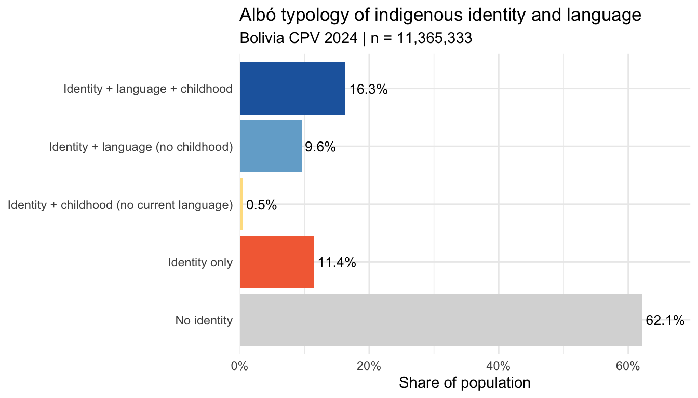
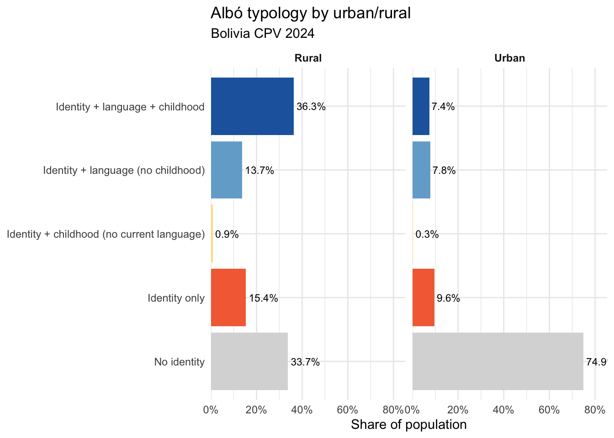
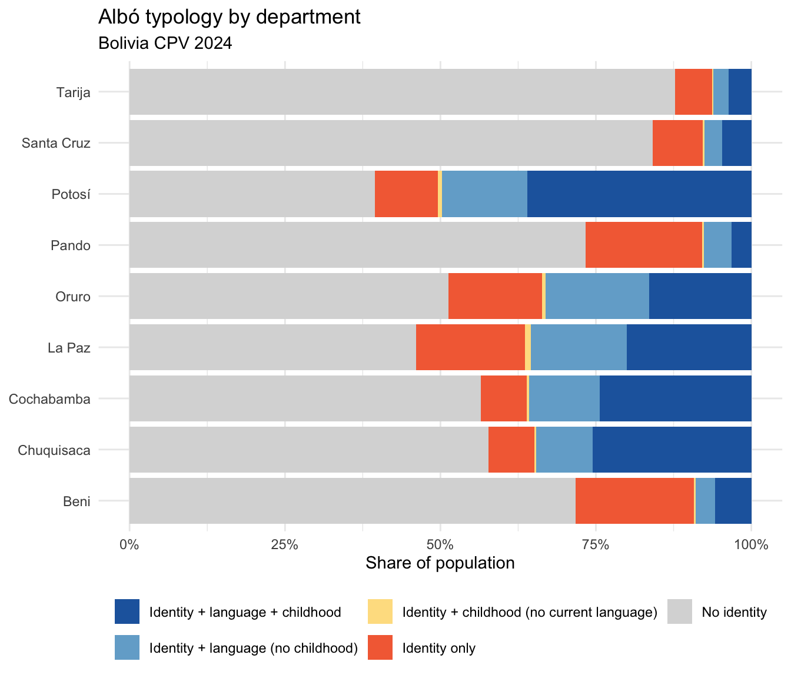
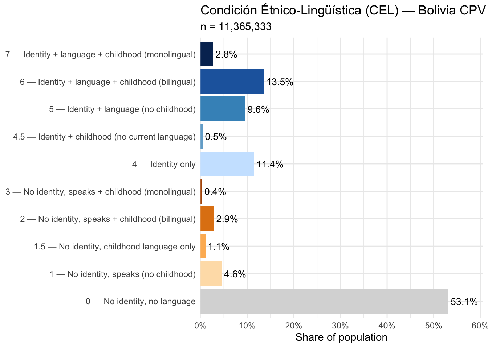
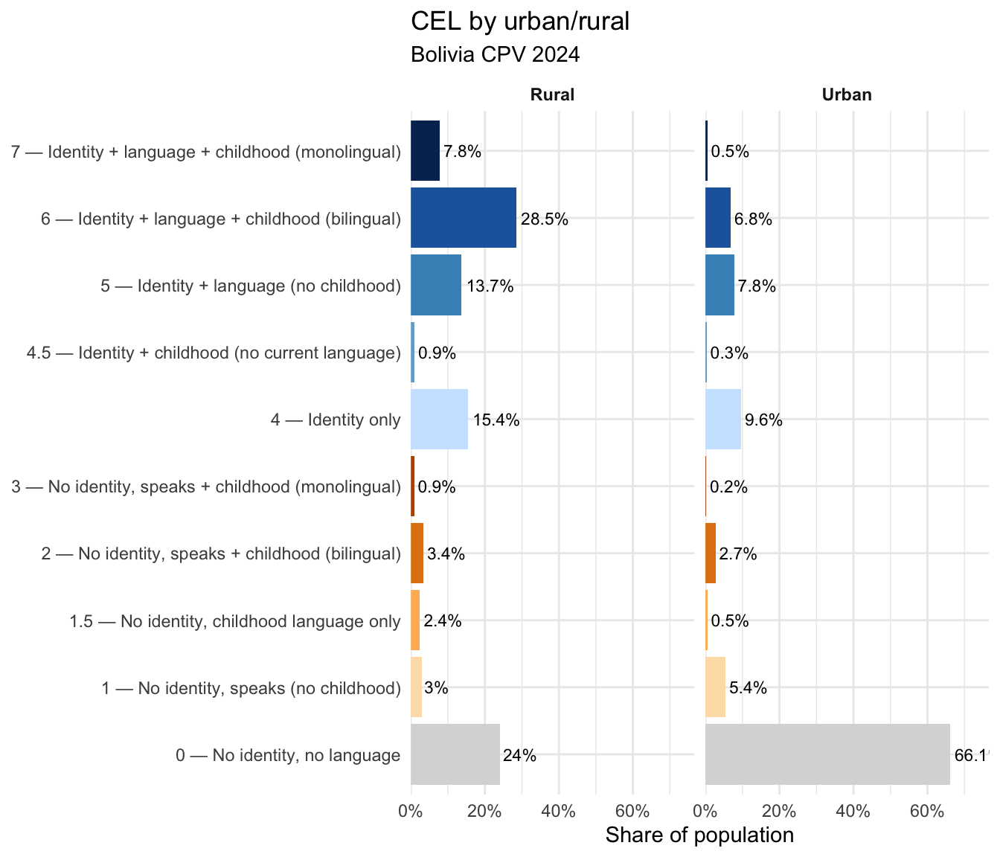
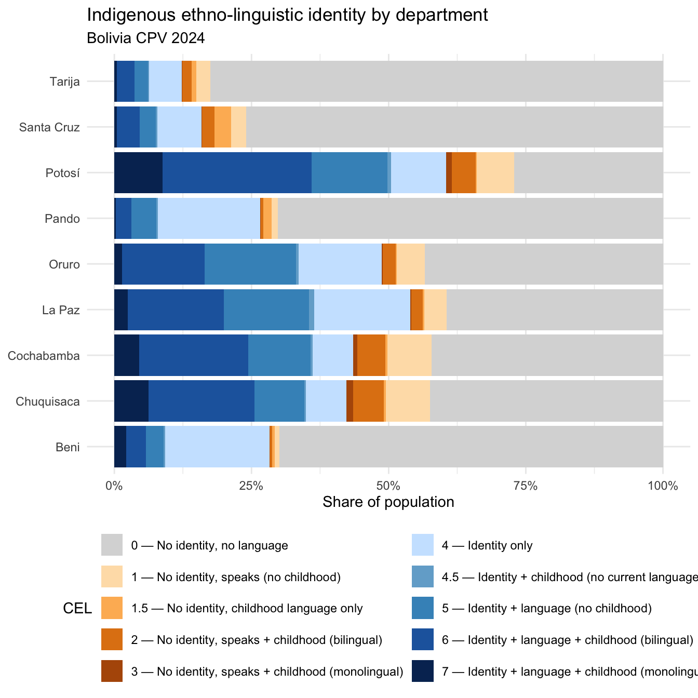
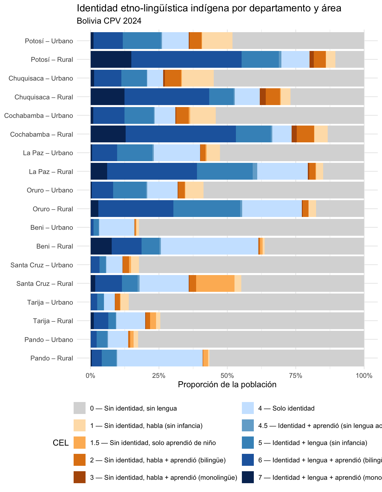

library(arrow)
library(tidyverse)
library(patchwork)
DATA_DIR <- "../bolivia-data/Censo 2024/base_datos_csv_2024"
CENSO_DIR <- "../bolivia-data/Censo 2024"Bolivia Census 2024 — Albó indicators of indigenous identity and language
Background
Xavier Albó’s framework for studying indigenous identity distinguishes between several dimensions that the census allows us to measure independently:
- Self-identification with an indigenous or Afrobolivian group (Q1)
- Language match: whether the language(s) a person speaks correspond to their declared identity (Q2)
- Childhood language: whether they learned an indigenous language as a child (Q3)
- Castellano use: whether they speak Spanish as any of their current languages (C)
These four boolean variables — albo_q1, albo_q2, albo_q3, albo_c — are pre-computed for all 11,365,333 persons and saved as albo_vars.rds. This document describes their construction, validates them against the raw census variables, and begins exploring what they reveal.
Setup
Lookup tables
# p32_pueblos: CTAI-consolidated identity groups (58 categories + 98/99)
pueblos_cats <- tribble(
~code, ~label,
1, "Afroboliviano", 2, "Araona", 3, "Aymara",
4, "Ayoreo", 5, "Baure", 6, "Canichana",
7, "Cavineño", 8, "Cayubaba", 9, "Chácobo",
10, "Charka Qhara Qhara", 11, "Chichas", 12, "Chiquitano",
13, "Chuwi", 14, "Ese Ejja", 15, "Guaraní",
16, "Guarasu´we", 17, "Gwarayu", 18, "Itonama",
19, "Jach'a Carangas", 20, "Jalq'a", 21, "Joaquiniano",
22, "Kallawaya", 23, "Killacas", 24, "Leco",
25, "Lípez", 26, "Lupaca", 27, "Machineri",
28, "Maropa", 29, "Mojeño", 30, "Mojeño Ignaciano",
31, "Mojeño Trinitario", 32, "Moré", 33, "Mosetén",
34, "Movima", 35, "Pacahuara", 36, "Pakajaqi",
37, "Paunaca", 38, "Puquina", 39, "Qhapaq Uma Suyu",
40, "Quechua", 41, "Qullas", 42, "Raqaypampa",
43, "Sirionó", 44, "Sora", 45, "Tacana",
46, "Tapiete", 47, "Toromona", 48, "Tsimane´",
49, "Uru-Chipaya", 50, "Weenhayek", 51, "Yaminawa",
52, "Yampara", 53, "Yuqui", 54, "Yurakaré",
55, "Quechua - Aymara", 56, "Más de una descripción",
57, "Otras declaraciones", 58, "Otros pueblos indígenas extranjeros",
98, "No se autoidentifica", 99, "Sin respuesta"
)
# idioma_mat / idioma_mayor_uso / p33x spoken-language codes
idioma_cats <- tribble(
~code, ~label,
1, "Araona", 2, "Aymara", 3, "Baure",
4, "Bésiro", 5, "Canichana", 6, "Castellano",
7, "Kabineña", 8, "Cayubaba", 9, "Chácobo",
10, "Tsimane´", 11, "Ese Ejja", 12, "Guaraní",
13, "Guarasu´we", 14, "Gwarayu", 15, "Itonama",
16, "Leco", 17, "Kallawaya", 18, "Machineri",
19, "Maropa", 20, "Mojeño Ignaciano", 21, "Mojeño Trinitario",
22, "Moré", 23, "Mosetén", 24, "Movima",
25, "Pacahuara", 26, "Puquina", 27, "Quechua",
28, "Sirionó", 29, "Tacana", 30, "Tapiete",
32, "Uru-Chipaya", 33, "Weenhayek", 34, "Yaminawa",
35, "Yuqui", 36, "Yurakaré", 37, "Zamuco",
94, "Afroboliviano", 991, "Otras declaraciones", 992, "Otro idioma extranjero",
994, "Lenguaje de señas", 998, "No habla"
)Variable construction
Source variables
The four Albó indicators are derived from the following raw census variables:
| Raw variable | Description |
|---|---|
p32_pueblo_per |
Indigenous self-identification: 1 = Sí, 2 = No, 9 = Sin respuesta |
p32_pueblos |
CTAI-reconciled identity group (58 categories); derived from p32_pueblo_cod |
p331_idiohab1_cod |
First spoken language (current use) |
p332_idiohab2_cod |
Second spoken language (current use) |
p333_idiohab3_cod |
Third spoken language (current use) |
p341_idiomat_cod |
Language learned as a child (NA if respondent answered “No” to p34) |
p342_idiomat_no |
= 1 when respondent did not learn any language as a child |
Indicator definitions
# Shown for documentation; albo_vars.rds is the pre-computed output.
# albo_q1: Self-identifies with an indigenous or Afrobolivian group
# albo_q1 <- p32_pueblo_per == 1
# albo_q2: Speaks a language that corresponds to their declared identity.
#
# For named groups with a known language (e.g. Quechua → code 27, Chiquitano
# → Bésiro code 4, Ayoreo → Zamuco code 37), albo_q2 is TRUE when any of
# p331/p332/p333 is in that language's code set.
#
# For groups that use the "any indigenous language" rule — generic identities
# (Otras declaraciones = 57, Quechua-Aymara = 55, Más de una descripción = 56)
# AND groups with no separate census language (Afroboliviano = 1, Chuwi = 13,
# Paunaca = 37, Toromona = 47, foreign groups = 58) — albo_q2 is TRUE when
# any of p331/p332/p333 is an indigenous language code (1–5 or 7–37).
#
# Always FALSE if albo_q1 is FALSE.
# albo_q3: Learned an indigenous language as a child
# albo_q3 <- !is.na(p341_idiomat_cod) & p341_idiomat_cod != 6 & p341_idiomat_cod != 999
# albo_c: Speaks Castellano (as any of their current languages)
# albo_c <- any of p331/p332/p333 == 6Notable mapping decisions
Two naming-convention differences affect the language–identity crosswalk:
- Kabineña (code 7 in
idioma_mat) = Cavineño (code 7 inp32_pueblos): same community, different orthographic conventions. - Zamuco (code 37 in
idioma_mat) = Ayoreo (code 4 inp32_pueblos): Zamuco is the ISO language name; Ayoreo is the ethnonym used in identity contexts.
Several Andean sub-ethnic identities map to the major Andean languages:
- Quechua sub-groups (Charka Qhara Qhara, Chichas, Jalq’a, Yampara, Lípez, Raqaypampa) → Quechua (27)
- Aymara sub-groups (Qullas, Killacas, Jach’a Carangas, Lupaca, Pakajaqi, Sora, Qhapaq Uma Suyu) → Aymara (2)
- Mojeño (29, the generic parent code) → Mojeño Ignaciano (20) or Trinitario (21)
- Joaquiniano (21) → Maropa (19)
- Chiquitano (12) → Bésiro (4)
- Ayoreo (4) → Zamuco (37)
Load pre-computed data
albo_vars <- readRDS(file.path(DATA_DIR, "albo_vars.rds"))
cel_geo <- readRDS(file.path(DATA_DIR, "cel_geo.rds"))
# Also load the pre-drawn 10k sample for any person-level illustration
persona_sample <- readRDS(file.path(DATA_DIR, "Persona_CPV-2024_sample10k.rds"))
cat("albo_vars dimensions:", nrow(albo_vars), "×", ncol(albo_vars), "\n")albo_vars dimensions: 11365333 × 10 glimpse(albo_vars)Rows: 11,365,333
Columns: 10
$ idep <int> 1, 1, 1, 1, 1, 1, 1, 1, 1, 1, 1, 1, 1, 1, 1, 1, 1, 1, 1, 1, 1,…
$ iprov <int> 1, 1, 1, 1, 1, 1, 1, 1, 1, 1, 1, 1, 1, 1, 1, 1, 1, 1, 1, 1, 1,…
$ imun <int> 1, 1, 1, 1, 1, 1, 1, 1, 1, 1, 1, 1, 1, 1, 1, 1, 1, 1, 1, 1, 1,…
$ urbrur <int> 1, 1, 1, 1, 1, 1, 1, 1, 1, 1, 1, 1, 1, 1, 1, 1, 1, 1, 1, 1, 1,…
$ albo_q1 <lgl> FALSE, FALSE, FALSE, FALSE, TRUE, TRUE, TRUE, FALSE, TRUE, FAL…
$ albo_q2 <lgl> FALSE, FALSE, FALSE, FALSE, TRUE, TRUE, TRUE, FALSE, TRUE, FAL…
$ albo_q3 <lgl> FALSE, TRUE, FALSE, FALSE, TRUE, FALSE, TRUE, FALSE, FALSE, FA…
$ albo_c <lgl> TRUE, TRUE, TRUE, TRUE, TRUE, TRUE, TRUE, TRUE, TRUE, TRUE, TR…
$ cel <dbl> 1, 2, 0, 0, 6, 5, 6, 0, 5, 0, 0, 0, 0, 0, 4, 6, 0, 2, 5, 7, 2,…
$ cel_q2 <lgl> TRUE, TRUE, FALSE, FALSE, TRUE, TRUE, TRUE, FALSE, TRUE, FALSE…Prevalence of each indicator
albo_vars |>
summarise(
n = n(),
`Q1: Self-identifies (%)` = round(mean(albo_q1) * 100, 1),
`Q2: Language match (%)` = round(mean(albo_q2) * 100, 1),
`Q3: Indigenous childhood language (%)` = round(mean(albo_q3) * 100, 1),
`C: Speaks Castellano (%)` = round(mean(albo_c) * 100, 1)
) |>
pivot_longer(everything(), names_to = "Indicator", values_to = "Value")# A tibble: 5 × 2
Indicator Value
<chr> <dbl>
1 n 11365333
2 Q1: Self-identifies (%) 37.9
3 Q2: Language match (%) 25.9
4 Q3: Indigenous childhood language (%) 21.3
5 C: Speaks Castellano (%) 92.6Among the full population of 11.4M:
- 37.9% self-identify as indigenous or Afrobolivian (Q1).
- 25.9% speak a language corresponding to their declared identity (Q2). The gap between Q1 and Q2 (≈12 pp) represents self-identifiers who have shifted to Spanish.
- 21.3% learned an indigenous language as a child (Q3). This is slightly lower than Q2, which is consistent: some people who learned an indigenous language as a child no longer speak it as adults, while some people speak an indigenous language now but via a path other than home transmission.
- 92.6% speak Castellano as one of their current languages (C).
Cross-tabulation of the four indicators
albo_vars |>
count(albo_q1, albo_q2, albo_q3, albo_c) |>
mutate(
pct = round(100 * n / sum(n), 2),
across(c(albo_q1, albo_q2, albo_q3, albo_c), \(x) if_else(x, "Y", "N"))
) |>
rename(Q1 = albo_q1, Q2 = albo_q2, Q3 = albo_q3, C = albo_c) |>
arrange(desc(n))# A tibble: 12 × 6
Q1 Q2 Q3 C n pct
<chr> <chr> <chr> <chr> <int> <dbl>
1 N N N Y 6222999 54.8
2 Y Y Y Y 1539123 13.5
3 Y N N Y 1244819 11.0
4 Y Y N Y 1067481 9.39
5 N N Y Y 398595 3.51
6 N N N N 337176 2.97
7 Y Y Y N 314790 2.77
8 N N Y N 104079 0.92
9 Y N Y Y 54261 0.48
10 Y N N N 52586 0.46
11 Y Y N N 24523 0.22
12 Y N Y N 4901 0.04The four most common profiles are:
- N/N/N/Y — Does not identify, no indigenous language (child or adult), speaks Spanish. The large non-indigenous majority.
- Y/Y/Y/Y — Identifies, speaks the identity language, learned it as a child, and also speaks Spanish. The “full” indigenous profile with Spanish bilingualism.
- Y/N/N/Y — Identifies but has shifted to Spanish on all three dimensions. Identity without language.
- Y/Y/Y/N — Identifies, speaks the identity language, learned it as a child, no Spanish. Monolingual indigenous speakers.
Albó typology
A simplified typology collapses Q1–Q3 into mutually exclusive categories, following Albó’s original framing:
albo_vars <- albo_vars |>
mutate(
albo_type = case_when(
!albo_q1 ~ "No identity",
albo_q1 & albo_q2 & albo_q3 ~ "Identity + language + childhood",
albo_q1 & albo_q2 & !albo_q3 ~ "Identity + language (no childhood)",
albo_q1 & !albo_q2 & albo_q3 ~ "Identity + childhood (no current language)",
albo_q1 & !albo_q2 & !albo_q3 ~ "Identity only"
),
albo_type = factor(albo_type, levels = c(
"Identity + language + childhood",
"Identity + language (no childhood)",
"Identity + childhood (no current language)",
"Identity only",
"No identity"
))
)
albo_vars |>
count(albo_type) |>
mutate(pct = round(100 * n / sum(n), 1)) |>
arrange(albo_type)# A tibble: 5 × 3
albo_type n pct
<fct> <int> <dbl>
1 Identity + language + childhood 1853913 16.3
2 Identity + language (no childhood) 1092004 9.6
3 Identity + childhood (no current language) 59162 0.5
4 Identity only 1297405 11.4
5 No identity 7062849 62.1type_colors <- c(
"Identity + language + childhood" = "#2166ac",
"Identity + language (no childhood)" = "#74add1",
"Identity + childhood (no current language)" = "#fee090",
"Identity only" = "#f46d43",
"No identity" = "#d9d9d9"
)
albo_vars |>
count(albo_type) |>
mutate(
pct = n / sum(n),
albo_type = fct_rev(albo_type)
) |>
ggplot(aes(x = pct, y = albo_type, fill = albo_type)) +
geom_col(show.legend = FALSE) +
geom_text(aes(label = paste0(round(pct * 100, 1), "%")),
hjust = -0.1, size = 3.5) +
scale_x_continuous(labels = scales::percent_format(),
expand = expansion(mult = c(0, 0.12))) +
scale_fill_manual(values = type_colors) +
labs(
title = "Albó typology of indigenous identity and language",
subtitle = "Bolivia CPV 2024 | n = 11,365,333",
x = "Share of population", y = NULL
) +
theme_minimal(base_size = 11)
Typology by urban/rural
urbrur_labels <- c("1" = "Urban", "2" = "Rural")
albo_vars |>
mutate(urbrur_label = urbrur_labels[as.character(urbrur)]) |>
filter(!is.na(urbrur_label)) |>
count(urbrur_label, albo_type) |>
group_by(urbrur_label) |>
mutate(pct = n / sum(n)) |>
ungroup() |>
mutate(albo_type = fct_rev(albo_type)) |>
ggplot(aes(x = pct, y = albo_type, fill = albo_type)) +
geom_col(show.legend = FALSE) +
geom_text(aes(label = paste0(round(pct * 100, 1), "%")),
hjust = -0.1, size = 3) +
scale_x_continuous(labels = scales::percent_format(),
expand = expansion(mult = c(0, 0.14))) +
scale_fill_manual(values = type_colors) +
facet_wrap(~ urbrur_label) +
labs(
title = "Albó typology by urban/rural",
subtitle = "Bolivia CPV 2024",
x = "Share of population", y = NULL
) +
theme_minimal(base_size = 11) +
theme(strip.text = element_text(face = "bold"))
Typology by department
dept_labels <- c(
"1" = "Chuquisaca", "2" = "La Paz", "3" = "Cochabamba",
"4" = "Oruro", "5" = "Potosí", "6" = "Tarija",
"7" = "Santa Cruz", "8" = "Beni", "9" = "Pando"
)
albo_vars |>
mutate(dept = dept_labels[as.character(idep)]) |>
count(dept, albo_type) |>
group_by(dept) |>
mutate(pct = round(100 * n / sum(n), 1)) |>
ungroup() |>
select(dept, albo_type, pct) |>
pivot_wider(names_from = albo_type, values_from = pct, values_fill = 0) |>
arrange(`Identity + language + childhood`)# A tibble: 9 × 6
dept Identity + language …¹ Identity + language …² Identity + childhood…³
<chr> <dbl> <dbl> <dbl>
1 Pando 3.1 4.5 0.3
2 Tarija 3.7 2.5 0.2
3 Santa Cr… 4.6 2.9 0.3
4 Beni 5.8 3.2 0.3
5 Oruro 16.5 16.6 0.5
6 La Paz 20 15.5 0.9
7 Cochabam… 24.4 11.3 0.4
8 Chuquisa… 25.5 9.1 0.3
9 Potosí 36 13.8 0.7
# ℹ abbreviated names: ¹`Identity + language + childhood`,
# ²`Identity + language (no childhood)`,
# ³`Identity + childhood (no current language)`
# ℹ 2 more variables: `Identity only` <dbl>, `No identity` <dbl>albo_vars |>
mutate(dept = dept_labels[as.character(idep)]) |>
count(dept, albo_type) |>
group_by(dept) |>
mutate(
pct = n / sum(n),
dept = fct_reorder(dept, pct * (albo_type == "Identity + language + childhood"), sum)
) |>
ungroup() |>
ggplot(aes(x = pct, y = dept, fill = albo_type)) +
geom_col() +
scale_x_continuous(labels = scales::percent_format()) +
scale_fill_manual(values = type_colors) +
labs(
title = "Albó typology by department",
subtitle = "Bolivia CPV 2024",
x = "Share of population", y = NULL, fill = NULL
) +
theme_minimal(base_size = 11) +
theme(legend.position = "bottom") +
guides(fill = guide_legend(nrow = 2))
Q2 among self-identifiers: language match rate by identity group
Among those who self-identify (albo_q1 = TRUE), what share also speaks the language of their declared identity (albo_q2 = TRUE)? This is loaded from the person file to get group-level counts.
ds <- open_dataset(
file.path(DATA_DIR, "Persona_CPV-2024.csv"),
format = "csv", delimiter = ";"
)
q2_by_group <- ds |>
filter(p32_pueblo_per == 1) |>
select(p32_pueblos,
p331_idiohab1_cod, p332_idiohab2_cod, p333_idiohab3_cod) |>
collect()# Re-derive albo_q2 logic per group using the same crosswalk as albo_vars.rds
# (See variable construction section for mapping rules)
indigenous_idioma_codes <- c(1:5, 7:37)
generic_groups_v2 <- c(1L, 13L, 37L, 47L, 55L, 56L, 57L, 58L)
# Flat lookup: one row per (pueblos_code, single idioma_code) pairing
lookup_flat <- tribble(
~pueblos_code, ~idioma_code,
2L, 1L, # Araona
3L, 2L, # Aymara
4L, 37L, # Ayoreo -> Zamuco
5L, 3L, # Baure
6L, 5L, # Canichana
7L, 7L, # Cavineño = Kabineña
8L, 8L, # Cayubaba
9L, 9L, # Chácobo
10L, 27L, # Charka Qhara Qhara -> Quechua
11L, 27L, # Chichas -> Quechua
12L, 4L, # Chiquitano -> Bésiro
14L, 11L, # Ese Ejja
15L, 12L, # Guaraní
16L, 13L, # Guarasu'we
17L, 14L, # Gwarayu
18L, 15L, # Itonama
19L, 2L, # Jach'a Carangas -> Aymara
20L, 27L, # Jalq'a -> Quechua
21L, 19L, # Joaquiniano -> Maropa
22L, 17L, # Kallawaya
23L, 2L, # Killacas -> Aymara
24L, 16L, # Leco
25L, 27L, # Lípez -> Quechua
26L, 2L, # Lupaca -> Aymara
27L, 18L, # Machineri
28L, 19L, # Maropa
29L, 20L, # Mojeño -> Mojeño Ignaciano
29L, 21L, # Mojeño -> Mojeño Trinitario
30L, 20L, # Mojeño Ignaciano
31L, 21L, # Mojeño Trinitario
32L, 22L, # Moré
33L, 23L, # Mosetén
34L, 24L, # Movima
35L, 25L, # Pacahuara
36L, 2L, # Pakajaqi -> Aymara
38L, 26L, # Puquina
39L, 2L, # Qhapaq Uma Suyu -> Aymara
40L, 27L, # Quechua
41L, 2L, # Qullas -> Aymara
42L, 27L, # Raqaypampa -> Quechua
43L, 28L, # Sirionó
44L, 2L, # Sora -> Aymara
45L, 29L, # Tacana
46L, 30L, # Tapiete
48L, 10L, # Tsimane'
49L, 32L, # Uru-Chipaya
50L, 33L, # Weenhayek
51L, 34L, # Yaminawa
52L, 27L, # Yampara -> Quechua
53L, 35L, # Yuqui
54L, 36L, # Yurakaré
55L, 2L, # Quechua-Aymara -> Aymara
55L, 27L # Quechua-Aymara -> Quechua
)
# Build lookup matrix (99 pueblos codes × 38 idioma codes)
valid_match_q2 <- matrix(FALSE, nrow = 99L, ncol = 38L)
for (i in seq_len(nrow(lookup_flat))) {
pc <- lookup_flat$pueblos_code[i]
ic <- lookup_flat$idioma_code[i]
if (ic <= 38L) valid_match_q2[pc, ic] <- TRUE
}
# Generic + Afro + unmatched groups: any indigenous language (codes 1-5, 7-37)
for (g in generic_groups_v2) {
valid_match_q2[g, indigenous_idioma_codes[indigenous_idioma_codes <= 38L]] <- TRUE
}
p32 <- q2_by_group$p32_pueblos
l1 <- q2_by_group$p331_idiohab1_cod
l2 <- q2_by_group$p332_idiohab2_cod
l3 <- q2_by_group$p333_idiohab3_cod
p32s <- ifelse(is.na(p32) | p32 > 99L, 0L, p32)
l1s <- ifelse(is.na(l1) | l1 > 38L, 0L, l1)
l2s <- ifelse(is.na(l2) | l2 > 38L, 0L, l2)
l3s <- ifelse(is.na(l3) | l3 > 38L, 0L, l3)
has <- p32s > 0L
q2v <- logical(nrow(q2_by_group))
q2v[has] <- valid_match_q2[cbind(p32s[has], pmax(l1s[has], 1L))]
q2v[has] <- q2v[has] | (l2s[has] > 0L & valid_match_q2[cbind(p32s[has], pmax(l2s[has], 1L))])
q2v[has] <- q2v[has] | (l3s[has] > 0L & valid_match_q2[cbind(p32s[has], pmax(l3s[has], 1L))])
q2_by_group |>
mutate(
pueblos_label = pueblos_cats$label[match(p32_pueblos, pueblos_cats$code)],
albo_q2 = q2v
) |>
group_by(pueblos_label) |>
summarise(
n = n(),
n_q2 = sum(albo_q2),
pct_q2 = round(100 * n_q2 / n, 1),
.groups = "drop"
) |>
filter(!is.na(pueblos_label),
!pueblos_label %in% c("No se autoidentifica", "Sin respuesta")) |>
arrange(desc(n)) |>
print(n = 60)# A tibble: 57 × 4
pueblos_label n n_q2 pct_q2
<chr> <int> <int> <dbl>
1 Quechua 1646811 1366157 83
2 Aymara 1595045 1073487 67.3
3 Otras declaraciones 544984 319905 58.7
4 Guaraní 103712 56633 54.6
5 Chiquitano 98983 5244 5.3
6 Chichas 29561 13327 45.1
7 Afroboliviano 25168 6417 25.5
8 Tsimane´ 22343 18897 84.6
9 Charka Qhara Qhara 20323 16710 82.2
10 Gwarayu 20154 9065 45
11 Tacana 19847 3402 17.1
12 Mojeño Trinitario 19354 2973 15.4
13 Leco 19110 2212 11.6
14 Kallawaya 15384 225 1.5
15 Movima 10654 683 6.4
16 Mojeño Ignaciano 9076 1074 11.8
17 Jach'a Carangas 8299 3310 39.9
18 Yurakaré 6480 1986 30.6
19 Jalq'a 6241 5749 92.1
20 Mojeño 6109 600 9.8
21 Itonama 5612 298 5.3
22 Weenhayek 5588 4942 88.4
23 Quechua - Aymara 5526 3904 70.6
24 Más de una descripción 5492 1623 29.6
25 Cavineño 5344 2049 38.3
26 Yampara 4383 3898 88.9
27 Mosetén 4099 1766 43.1
28 Uru-Chipaya 3822 2462 64.4
29 Killacas 3812 1245 32.7
30 Lípez 2922 2077 71.1
31 Maropa 2797 486 17.4
32 Pakajaqi 2715 1084 39.9
33 Qullas 2449 2170 88.6
34 Raqaypampa 2330 2239 96.1
35 Joaquiniano 1992 0 0
36 Puquina 1944 181 9.3
37 Ese Ejja 1927 1523 79
38 Ayoreo 1890 1559 82.5
39 Baure 1618 93 5.7
40 Chácobo 1530 1273 83.2
41 Cayubaba 1064 43 4
42 Lupaca 1031 918 89
43 Otros pueblos indígenas extranjeros 943 209 22.2
44 Canichana 865 33 3.8
45 Sirionó 722 386 53.5
46 Chuwi 495 486 98.2
47 Yuqui 478 358 74.9
48 Sora 453 79 17.4
49 Yaminawa 228 138 60.5
50 Moré 212 108 50.9
51 Guarasu´we 149 2 1.3
52 Araona 147 98 66.7
53 Tapiete 104 64 61.5
54 Machineri 72 31 43.1
55 Pacahuara 70 31 44.3
56 Toromona 14 1 7.1
57 Paunaca 7 4 57.1Q3: Childhood language acquisition
albo_q3 captures whether the respondent learned an indigenous language as a child (p341_idiomat_cod not NA, not 6 = Castellano, not 999 = Sin respuesta).
# Among self-identifiers: what share learned an indigenous language as a child?
albo_vars |>
group_by(albo_q1) |>
summarise(
n = n(),
pct_q3 = round(100 * mean(albo_q3), 1),
.groups = "drop"
) |>
mutate(albo_q1 = if_else(albo_q1, "Self-identifies", "Does not identify"))# A tibble: 2 × 3
albo_q1 n pct_q3
<chr> <int> <dbl>
1 Does not identify 7062849 7.1
2 Self-identifies 4302484 44.5# How do Q2 (current language match) and Q3 (childhood language) diverge?
albo_vars |>
filter(albo_q1) |>
count(albo_q2, albo_q3) |>
mutate(
pct = round(100 * n / sum(n), 1),
label_q2 = if_else(albo_q2, "Speaks identity language", "Does not speak identity language"),
label_q3 = if_else(albo_q3, "Learned indigenous\nlanguage as child", "Did not learn\nas child")
) |>
select(label_q2, label_q3, n, pct) |>
arrange(desc(n))# A tibble: 4 × 4
label_q2 label_q3 n pct
<chr> <chr> <int> <dbl>
1 Speaks identity language "Learned indigenous\nlanguage a… 1.85e6 43.1
2 Does not speak identity language "Did not learn\nas child" 1.30e6 30.2
3 Speaks identity language "Did not learn\nas child" 1.09e6 25.4
4 Does not speak identity language "Learned indigenous\nlanguage a… 5.92e4 1.4The most notable cell is self-identifiers who learned an indigenous language as a child (Q3 = TRUE) but no longer speak the corresponding identity language daily (Q2 = FALSE): this is the clearest signal of post-childhood language shift — a person who was raised in an indigenous-language household but has since shifted to Spanish.
Castellano (albo_c) by group
# Castellano use by Albó typology
albo_vars |>
group_by(albo_type) |>
summarise(
n = n(),
pct_c = round(100 * mean(albo_c), 1),
.groups = "drop"
)# A tibble: 5 × 3
albo_type n pct_c
<fct> <int> <dbl>
1 Identity + language + childhood 1853913 83
2 Identity + language (no childhood) 1092004 97.8
3 Identity + childhood (no current language) 59162 91.7
4 Identity only 1297405 95.9
5 No identity 7062849 93.8The share speaking Castellano is near-universal (>97%) even among self- identifiers who speak their identity language and learned it as a child. The only group where Castellano use is notably lower is “Identity + language + childhood” — i.e., people with the deepest indigenous-language profile — which still shows ~83% Castellano use, consistent with widespread functional bilingualism.
Condición Étnico-Lingüística (CEL)
Albó and Romero defined a seven-level ordinal scale — the Condición Étnico-Lingüística (CEL) — combining the three questions and Castellano use into a single indicator of ethnic-linguistic position. Two additional half-step levels (1.5 and 4.5) capture empirically common combinations not in the original scale.
Scale definition
| CEL | Q1 | Q2 | Q3 | C | Description |
|---|---|---|---|---|---|
| 7 | S | S | S | N | Pertenece, habla, aprendió — sin castellano |
| 6 | S | S | S | S | Pertenece, habla, aprendió — con castellano |
| 5 | S | S | N | S | Pertenece, habla, no aprendió |
| 4.5 | S | N | S | S | Pertenece, no habla, pero aprendió como niño |
| 4 | S | N | N | S | Pertenece, no habla, no aprendió |
| 3 | N | S | S | N | No pertenece, pero habla y aprendió — sin castellano |
| 2 | N | S | S | S | No pertenece, pero habla y aprendió — con castellano |
| 1 | N | S | N | S | No pertenece, habla, no aprendió |
| 1.5 | N | N | S | S | No pertenece, no habla, pero aprendió como niño |
| 0 | N | N | N | S | No pertenece, no habla, no aprendió |
Note on Q2 for non-identifiers: For people who self-identify (Q1 = TRUE), Q2 tests whether their spoken language matches their declared identity group (per the albo_q2 crosswalk). For non-identifiers (Q1 = FALSE), there is no declared identity to match against, so Q2 reduces to: does the person speak any Bolivian indigenous language (idioma codes 1–5 or 7–37)? This is captured in the cel_q2 column. albo_q2 and cel_q2 are identical for identifiers; they differ only for non-identifiers.
Compute CEL
# cel_q2 and cel are pre-computed in albo_vars.rds.
# The CEL assignment logic:
#
# cel_q2 = albo_q2 (for identifiers, Q1 = TRUE)
# = speaks any indigenous language (for non-identifiers, Q1 = FALSE)
# (codes 1–5 or 7–37 in p331/p332/p333)
#
# cel = case_when(
# albo_q1 & cel_q2 & albo_q3 & !albo_c ~ 7,
# albo_q1 & cel_q2 & albo_q3 & albo_c ~ 6,
# albo_q1 & cel_q2 & !albo_q3 ~ 5,
# albo_q1 & !cel_q2 & albo_q3 ~ 4.5,
# albo_q1 & !cel_q2 & !albo_q3 ~ 4,
# !albo_q1 & cel_q2 & albo_q3 & !albo_c ~ 3,
# !albo_q1 & cel_q2 & albo_q3 & albo_c ~ 2,
# !albo_q1 & cel_q2 & !albo_q3 ~ 1,
# !albo_q1 & !cel_q2 & albo_q3 ~ 1.5,
# !albo_q1 & !cel_q2 & !albo_q3 ~ 0
# )
albo_vars |>
count(cel) |>
mutate(pct = round(100 * n / sum(n), 2)) |>
arrange(cel)# A tibble: 10 × 3
cel n pct
<dbl> <int> <dbl>
1 0 6031823 53.1
2 1 528352 4.65
3 1.5 125982 1.11
4 2 332018 2.92
5 3 44674 0.39
6 4 1297405 11.4
7 4.5 59162 0.52
8 5 1092004 9.61
9 6 1539123 13.5
10 7 314790 2.77CEL distribution
cel_labels <- c(
"0" = "0 — No identity, no language",
"1" = "1 — No identity, speaks (no childhood)",
"1.5" = "1.5 — No identity, childhood language only",
"2" = "2 — No identity, speaks + childhood (bilingual)",
"3" = "3 — No identity, speaks + childhood (monolingual)",
"4" = "4 — Identity only",
"4.5" = "4.5 — Identity + childhood (no current language)",
"5" = "5 — Identity + language (no childhood)",
"6" = "6 — Identity + language + childhood (bilingual)",
"7" = "7 — Identity + language + childhood (monolingual)"
)
cel_colors <- c(
"0" = "#d9d9d9",
"1" = "#fee0b6",
"1.5" = "#fdb863",
"2" = "#e08214",
"3" = "#b35806",
"4" = "#cce5ff",
"4.5" = "#74add1",
"5" = "#4393c3",
"6" = "#2166ac",
"7" = "#053061"
)
albo_vars |>
count(cel) |>
mutate(
pct = n / sum(n),
cel_chr = as.character(cel),
cel_lbl = cel_labels[cel_chr],
cel_lbl = fct_reorder(cel_lbl, cel)
) |>
ggplot(aes(x = pct, y = cel_lbl, fill = cel_chr)) +
geom_col(show.legend = FALSE) +
geom_text(aes(label = paste0(round(pct * 100, 1), "%")),
hjust = -0.1, size = 3.5) +
scale_x_continuous(labels = scales::percent_format(),
expand = expansion(mult = c(0, 0.14))) +
scale_fill_manual(values = cel_colors) +
labs(
title = "Condición Étnico-Lingüística (CEL) — Bolivia CPV 2024",
subtitle = "n = 11,365,333",
x = "Share of population", y = NULL
) +
theme_minimal(base_size = 11)
CEL by urban/rural
urbrur_labels <- c("1" = "Urban", "2" = "Rural")
albo_vars |>
mutate(urbrur_label = urbrur_labels[as.character(urbrur)]) |>
filter(!is.na(urbrur_label)) |>
count(urbrur_label, cel) |>
group_by(urbrur_label) |>
mutate(
pct = n / sum(n),
cel_chr = as.character(cel),
cel_lbl = cel_labels[cel_chr],
cel_lbl = fct_reorder(cel_lbl, cel)
) |>
ungroup() |>
ggplot(aes(x = pct, y = cel_lbl, fill = cel_chr)) +
geom_col(show.legend = FALSE) +
geom_text(aes(label = paste0(round(pct * 100, 1), "%")),
hjust = -0.1, size = 3) +
scale_x_continuous(labels = scales::percent_format(),
expand = expansion(mult = c(0, 0.16))) +
scale_fill_manual(values = cel_colors) +
facet_wrap(~ urbrur_label) +
labs(
title = "CEL by urban/rural",
subtitle = "Bolivia CPV 2024",
x = "Share of population", y = NULL
) +
theme_minimal(base_size = 11) +
theme(strip.text = element_text(face = "bold"))
CEL by department
dept_labels <- c(
"1" = "Chuquisaca", "2" = "La Paz", "3" = "Cochabamba",
"4" = "Oruro", "5" = "Potosí", "6" = "Tarija",
"7" = "Santa Cruz", "8" = "Beni", "9" = "Pando"
)
albo_vars |>
mutate(dept = dept_labels[as.character(idep)]) |>
count(dept, cel) |>
group_by(dept) |>
mutate(
pct = n / sum(n),
cel_chr = as.character(cel),
dept = fct_reorder(dept, pct * (cel %in% c(6, 7)), sum)
) |>
ungroup() |>
ggplot(aes(x = pct, y = dept, fill = cel_chr)) +
geom_col() +
scale_x_continuous(labels = scales::percent_format()) +
scale_fill_manual(values = cel_colors, labels = cel_labels, name = "CEL") +
labs(
title = "Indigenous ethno-linguistic identity by department",
subtitle = "Bolivia CPV 2024",
x = "Share of population", y = NULL
) +
theme_minimal(base_size = 11) +
theme(
legend.position = "bottom",
legend.key.width = unit(0.6, "cm")
) +
guides(fill = guide_legend(ncol = 2))
dept_labels <- c(
"1" = "Chuquisaca", "2" = "La Paz", "3" = "Cochabamba",
"4" = "Oruro", "5" = "Potosí", "6" = "Tarija",
"7" = "Santa Cruz", "8" = "Beni", "9" = "Pando"
)
cel_labels_en <- c(
"0" = "0 \u2014 No identity, no language",
"1" = "1 \u2014 No identity, speaks (no childhood)",
"1.5" = "1.5 \u2014 No identity, childhood only",
"2" = "2 \u2014 No identity, speaks + childhood (bilingual)",
"3" = "3 \u2014 No identity, speaks + childhood (monolingual)",
"4" = "4 \u2014 Identity only",
"4.5" = "4.5 \u2014 Identity + childhood (no current language)",
"5" = "5 \u2014 Identity + language (no childhood)",
"6" = "6 \u2014 Identity + language + childhood (bilingual)",
"7" = "7 \u2014 Identity + language + childhood (monolingual)"
)
cel_labels_es <- c(
"0" = "0 \u2014 Sin identidad, sin lengua",
"1" = "1 \u2014 Sin identidad, habla (sin infancia)",
"1.5" = "1.5 \u2014 Sin identidad, solo aprendió de niño",
"2" = "2 \u2014 Sin identidad, habla + aprendió (bilingüe)",
"3" = "3 \u2014 Sin identidad, habla + aprendió (monolingüe)",
"4" = "4 \u2014 Solo identidad",
"4.5" = "4.5 \u2014 Identidad + aprendió (sin lengua actual)",
"5" = "5 \u2014 Identidad + lengua (sin infancia)",
"6" = "6 \u2014 Identidad + lengua + aprendió (bilingüe)",
"7" = "7 \u2014 Identidad + lengua + aprendió (monolingüe)"
)
# Rank departments by overall share at CEL 6–7 (most indigenous = highest rank)
dept_rank <- albo_vars |>
mutate(dept = dept_labels[as.character(idep)]) |>
count(dept, cel) |>
group_by(dept) |>
mutate(pct = n / sum(n)) |>
summarise(score = sum(pct * (cel %in% c(6, 7))), .groups = "drop") |>
arrange(score) |>
mutate(dept_rank = row_number())
# Shared plot data: department × urban/rural
cel_dept_df <- albo_vars |>
mutate(dept = dept_labels[as.character(idep)]) |>
count(dept, urbrur, cel) |>
group_by(dept, urbrur) |>
mutate(pct = n / sum(n)) |>
ungroup() |>
left_join(dept_rank |> select(dept, dept_rank), by = "dept") |>
mutate(
urb_order = if_else(urbrur == 1L, 0L, 1L), # Urban=0, Rural=1
y_pos = dept_rank * 2 - urb_order,
cel_chr = as.character(cel)
)
# English chart
cel_dept_df |>
mutate(bar_label = fct_reorder(
paste0(dept, " \u2013 ", if_else(urbrur == 1, "Urban", "Rural")), y_pos
)) |>
ggplot(aes(x = pct, y = bar_label, fill = cel_chr)) +
geom_col() +
scale_x_continuous(labels = scales::percent_format()) +
scale_fill_manual(values = cel_colors, labels = cel_labels_en, name = "CEL") +
labs(
title = "Indigenous ethno-linguistic identity by department and urban/rural",
subtitle = "Bolivia CPV 2024",
x = "Share of population", y = NULL
) +
theme_minimal(base_size = 11) +
theme(
legend.position = "bottom",
legend.key.width = unit(0.6, "cm")
) +
guides(fill = guide_legend(ncol = 2))
# Spanish chart (reuses cel_dept_df and dept_rank from chunk above)
cel_dept_df |>
mutate(bar_label = fct_reorder(
paste0(dept, " \u2013 ", if_else(urbrur == 1, "Urbano", "Rural")), y_pos
)) |>
ggplot(aes(x = pct, y = bar_label, fill = cel_chr)) +
geom_col() +
scale_x_continuous(labels = scales::percent_format()) +
scale_fill_manual(values = cel_colors, labels = cel_labels_es, name = "CEL") +
labs(
title = "Identidad etno-ling\u00fcística ind\u00edgena por departamento y área",
subtitle = "Bolivia CPV 2024",
x = "Proporción de la población", y = NULL
) +
theme_minimal(base_size = 11) +
theme(
legend.position = "bottom",
legend.key.width = unit(0.6, "cm")
) +
guides(fill = guide_legend(ncol = 2))
CEL municipality groups (Albó-Romero)
Albó and Romero further classified municipalities into nine groups (A–I) based on the share of their population at three CEL thresholds: cel_5plus (CEL ≥ 5), cel_4plus (CEL ≥ 4), and cel_2plus (CEL ≥ 2). Each municipality is assigned to the first group whose thresholds it meets.
| Group | CEL ≥ 5 | CEL ≥ 4 | CEL ≥ 2 |
|---|---|---|---|
| A | ≥ 90% | ≥ 90% | ≥ 90% |
| B | > 67% | > 80% | > 90% |
| C | > 50% | > 67% | > 67% |
| D | > 33% | > 50% | > 67% |
| E | — | — | > 75% |
| F | — | — | > 50% |
| G | — | — | > 33% |
| H | — | — | > 10% |
| I | < 10% in all categories |
dept_names <- c(
"1" = "Chuquisaca", "2" = "La Paz", "3" = "Cochabamba",
"4" = "Oruro", "5" = "Potosí", "6" = "Tarija",
"7" = "Santa Cruz", "8" = "Beni", "9" = "Pando"
)
albo_groups <- cel_geo |>
filter(!is.na(municipality), is.na(urban_rural)) |>
select(department, province, municipality, cel_2plus, cel_4plus, cel_5plus) |>
mutate(
albo_group = case_when(
cel_5plus >= 90 & cel_4plus >= 90 & cel_2plus >= 90 ~ "A",
cel_5plus > 67 & cel_4plus > 80 & cel_2plus > 90 ~ "B",
cel_5plus > 50 & cel_4plus > 67 & cel_2plus > 67 ~ "C",
cel_5plus > 33 & cel_4plus > 50 & cel_2plus > 67 ~ "D",
cel_2plus > 75 ~ "E",
cel_2plus > 50 ~ "F",
cel_2plus > 33 ~ "G",
cel_2plus > 10 ~ "H",
TRUE ~ "I"
)
)
# Wide table: groups × departments
all_groups <- LETTERS[1:9]
dept_cols <- as.character(dept_names)
total_muns <- nrow(albo_groups)
wide <- albo_groups |>
mutate(dept_name = dept_names[as.character(department)]) |>
count(albo_group, dept_name) |>
tidyr::pivot_wider(names_from = dept_name, values_from = n, values_fill = 0L)
wide <- tibble(albo_group = all_groups) |>
left_join(wide, by = "albo_group") |>
mutate(across(all_of(dept_cols), ~ replace_na(., 0L))) |>
mutate(
Total = rowSums(pick(all_of(dept_cols)), na.rm = TRUE),
Pct = sprintf("%.1f%%", Total / total_muns * 100),
Cumulative = cumsum(Total)
)
total_row <- tibble(albo_group = "Total") |>
bind_cols(
wide |> summarise(across(all_of(dept_cols), sum)),
tibble(Total = sum(wide$Total), Pct = "", Cumulative = as.double(NA))
)
tbl_data <- bind_rows(wide, total_row)
tbl_data |>
mutate(
across(
all_of(dept_cols),
~ if_else(albo_group != "Total" & (is.na(.) | . == 0L), NA_integer_, as.integer(.))
),
across(all_of(dept_cols), ~ if_else(is.na(.), "", as.character(.))),
Cumulative = if_else(is.na(Cumulative), "", as.character(as.integer(Cumulative))),
Total = if_else(Total == 0, "", as.character(as.integer(Total))),
Pct = if_else(Total == "" | Total == "0", "", Pct)
) |>
rename(Group = albo_group, `%` = Pct, Cum. = Cumulative) |>
knitr::kable(align = c("l", rep("r", length(dept_cols) + 3)))| Group | Chuquisaca | Cochabamba | La Paz | Oruro | Potosí | Santa Cruz | Beni | Pando | Tarija | Total | % | Cum. |
|---|---|---|---|---|---|---|---|---|---|---|---|---|
| A | 0 | |||||||||||
| B | 3 | 11 | 19 | 3 | 11 | 1 | 48 | 14.0% | 48 | |||
| C | 8 | 15 | 41 | 13 | 21 | 1 | 99 | 28.9% | 147 | |||
| D | 3 | 8 | 7 | 3 | 3 | 1 | 25 | 7.3% | 172 | |||
| E | 2 | 1 | 1 | 4 | 1.2% | 176 | ||||||
| F | 3 | 8 | 14 | 11 | 5 | 5 | 6 | 2 | 54 | 15.7% | 230 | |
| G | 7 | 2 | 3 | 3 | 2 | 10 | 7 | 2 | 1 | 37 | 10.8% | 267 |
| H | 5 | 4 | 1 | 1 | 29 | 6 | 11 | 5 | 62 | 18.1% | 329 | |
| I | 9 | 5 | 14 | 4.1% | 343 | |||||||
| Total | 29 | 48 | 87 | 35 | 42 | 56 | 20 | 15 | 11 | 343 |
Notes on variable limitations
albo_q2 for generic identities (Otras declaraciones, Quechua-Aymara, Más de una descripción) and groups with no distinct census language (Afroboliviano, Chuwi, Paunaca, Toromona, foreign groups): counted as TRUE if the respondent speaks any Bolivian indigenous language (codes 1–5 or 7–37). Afroboliviano in particular refers to a Spanish variety of the La Paz Yungas, not a structurally distinct language; including it on the “any indigenous language” rule means Afroboliviano identifiers who are also Quechua or Aymara speakers will score Q2 = TRUE.
p341_idiomat_cod (childhood language, Q3): code 999 is treated as non-response and excluded (same as NA). Code 6 = Castellano is excluded (learning Spanish as a child does not count as learning an indigenous language).
albo_c captures current Castellano use via p331/p332/p333. It does not capture whether someone learned Spanish as a child or speaks it fluently; only that they list it as one of up to three current languages.
urbrur is sourced from the Vivienda (household) file and joined on
idep + iprov + imun + i00. All 11,365,333 person rows matched exactly (0 NAs).